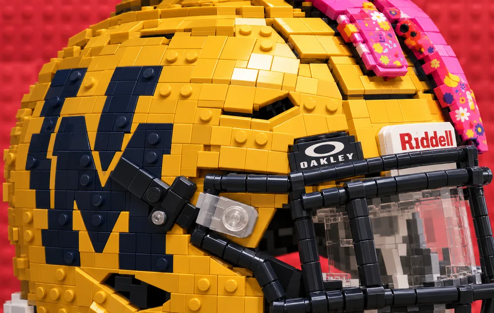
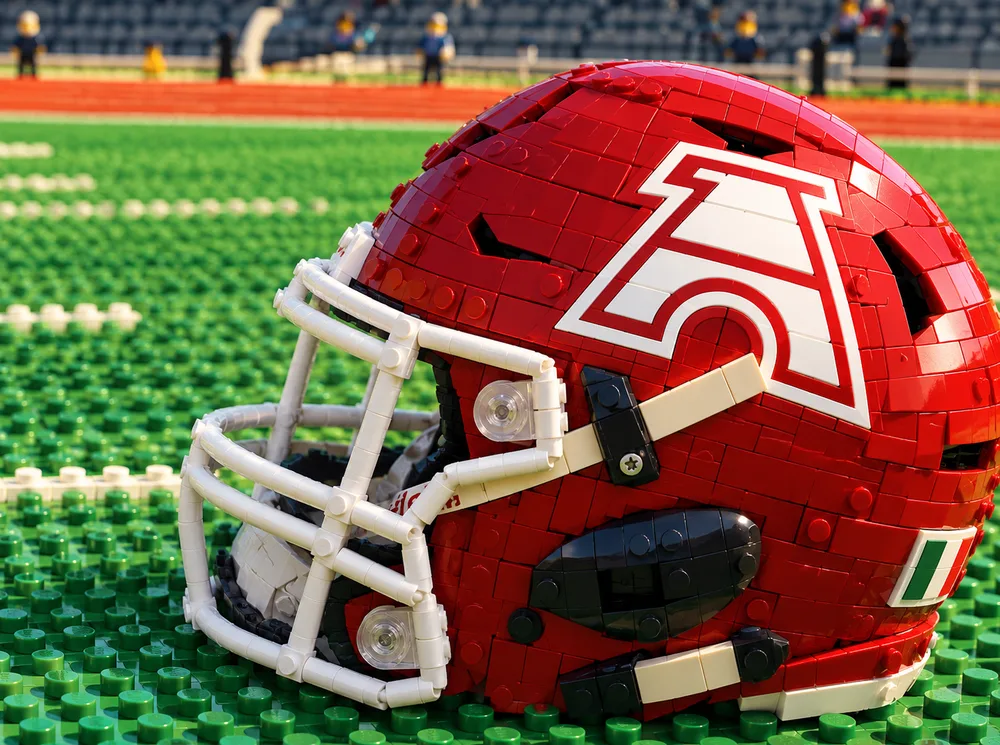
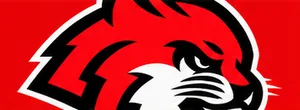
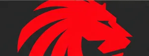

Juego 1Final
2012


Clásico Nacional que revive la tradición, el orgullo y la grandeza del futbol americano estudiantil
Los líderes de 14 GRANDES y NACIONAL · Estadísticas de la semana 5.
Yardas por partido. Cada logo muestra cuántas yardas por tierra (eje horizontal) y por aire (eje vertical) promedia el equipo. Las líneas punteadas dividen la gráfica en cuatro perfiles. Pasa el cursor sobre un logo para ver sus cifras; haz clic para abrir la página del equipo.
JJ = juegos jugados · G = ganados · P = perdidos · % = porcentaje de victorias · P.A. = puntos a favor · P.C. = puntos en contra · DIF = diferencia. JJ y % se calculan a partir de G y P. El orden es el de la tabla oficial de ONEFA.
Yardas por aire, por tierra y totales; primeros downs (1st & 10), puntos anotados, intercepciones y balones sueltos perdidos, y castigos. Haz clic en un encabezado para ordenar. Total Yds = Pass Yds + Rush Yds.
Yardas permitidas por aire, por tierra y totales; primeros downs permitidos, puntos permitidos, intercepciones y balones sueltos recuperados, y castigos. Ordenada de menos a más yardas permitidas. Haz clic en un encabezado para ordenar. Total Yds = Pass Yds + Rush Yds.
Yardas permitidas por aire, por tierra y totales; primeros downs permitidos, puntos permitidos, intercepciones y balones sueltos recuperados, y castigos. Ordenada de menos a más yardas permitidas. Haz clic en un encabezado para ordenar. Total Yds = Pass Yds + Rush Yds.
Cada barra reparte el total de primeros downs de los partidos de cada equipo: la parte ámbar son los que consiguió su ofensiva y la azul los que permitió su defensiva. El número dentro de cada segmento es la cantidad; el ancho es el porcentaje.

1613
2721